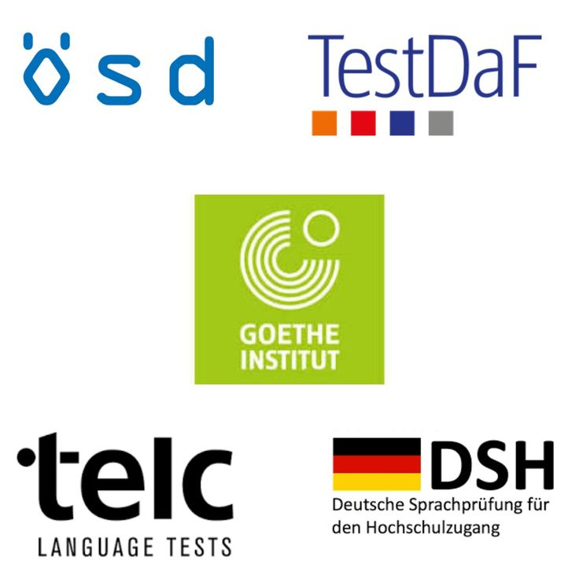
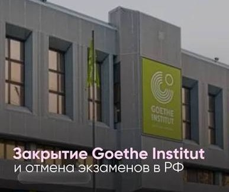

Подготовка к экзаменам по немецкому языку
О сайте

Этот сайт посвящён международным экзаменам по немецкому языку. Здесь собрана информация о трёх самых популярных экзаменах: TestDaF, Goethe-Zertifikat и telc. Такие сертификаты нужны для поступления в университет в Германии, для работы, для получения визы или просто чтобы подтвердить свой уровень языка.
На сайте можно узнать, чем экзамены отличаются друг от друга, где их можно сдать сейчас, как лучше к ним готовиться. Также есть пробный тест, который помогает примерно определить свой уровень от A0 до C2.
Уровни языка
Все экзамены основаны на общеевропейской шкале уровней (CEFR):
- A1 – начальный уровень, можно представиться и задать простые вопросы;
- A2 – базовый уровень, общение на бытовые темы;
- B1 – средний уровень, можно справиться с большинством ситуаций в поездке;
- B2 – выше среднего, можно понимать новости и спорить на разные темы;
- C1 – продвинутый уровень, нужен для большинства немецких университетов;
- C2 – уровень, близкий к носителю языка.
Уровень A0 означает, что человек только начинает учить язык.
Новости

С 12 сентября 2026 года экзамены Goethe-Zertifikat в России не проводятся.
Партнёрские центры Гёте-Института в России прекратили принимать экзамены на неопределённый срок. Теперь сдать этот экзамен можно только в других странах, например в Казахстане, Узбекистане, Грузии, Сербии или Турции. Подробнее об этом написано на странице «Где сдать».